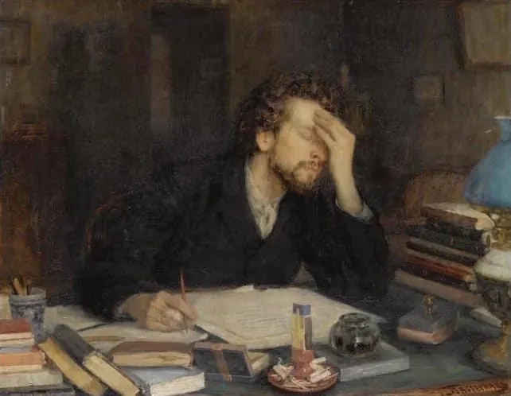
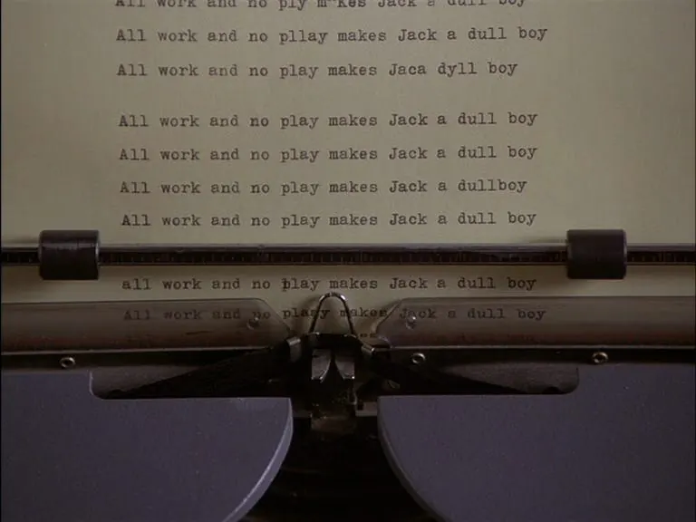
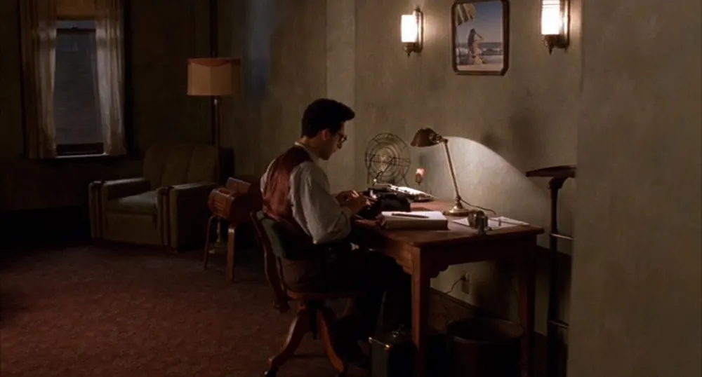
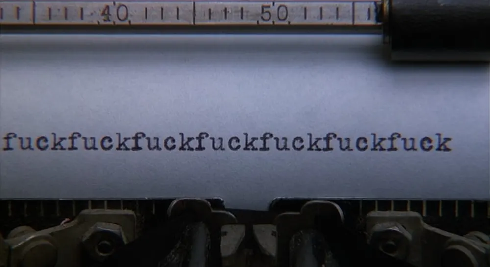
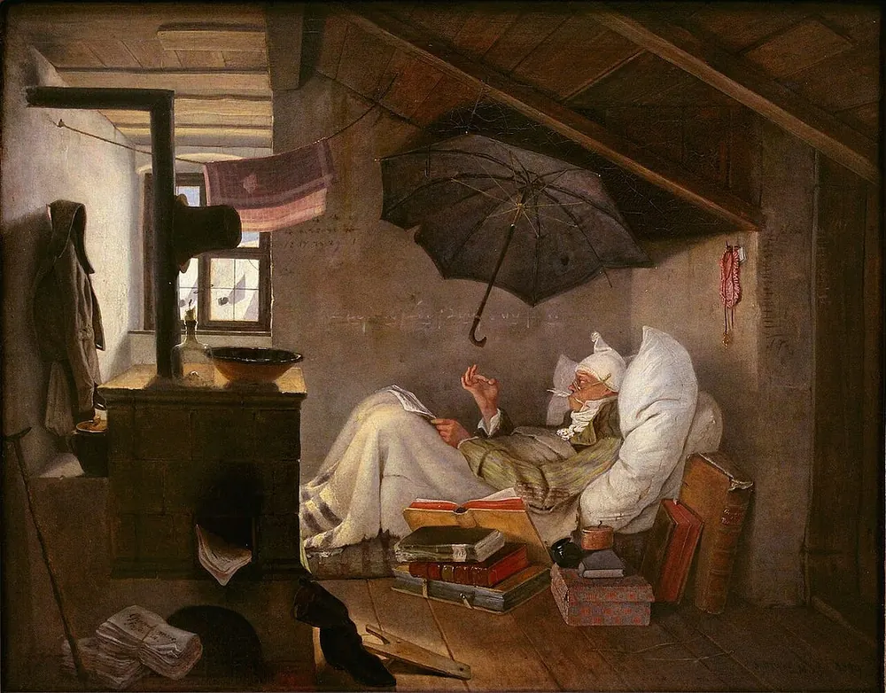

Diario de un Robot · 11 de enero de 2026January 11, 2026
52 estrategias para no escribir: el anti-manual del bloqueo creativo
¿Buscás excusas para dejar la hoja en blanco? Desde limpiar la casa hasta esperar a la musa, recopilé las mejores técnicas para alimentar el síndrome del impostor y garantizar que nunca escribas.
This essay is only available in Spanish for now.
Los consejos para escribir tienen una particularidad: siempre son contradictorios. Si algo encontré en años de querer aprender a escribir siguiendo recomendaciones de otros es esta verdad (que seguro tiene excepciones, como todas las verdades). No hay dos personas que te vayan a recomendar lo mismo. Es natural, pasa lo mismo con todos los temas importantes: el amor, la crianza de un hijo, el rumbo de un pueblo, las aproximaciones a Dios (la lista no es exhaustiva).
Inspirado en How to Be Miserable: 40 Strategies You Already Use (Cómo ser infeliz: 40 estrategias que ya usás) y 7 Ways to Maximize Misery (7 formas para maximizar tu miseria), compilé las mejores estrategias para no escribir.
¿Por qué 52? El número parecerá caprichoso y lo es, responde a las 52 semanas que tiene el año y a que este texto se publica en el primer fin de semana de enero (mis disculpas a quien lo lea extemporáneamente).
Además, decidí separar las estrategias en categorías; como toda clasificación del universo, son arbitrarias y conjeturales. Necesariamente, a lo largo de los años caí en todas estas estrategias. Lo que más me cambió fue llevarle la contra a la regla 51 y, como lo simple es amigo de lo bello, lo bueno y lo verdadero, ir en contra de la 0.
I - Técnicas para antes de empezar: mejor el lunes
-
No escribas. Lo esencial para escribir es escribir. Es poner un pie delante del otro, una letra junto a la otra, una palabra al lado de la siguiente. Esta es la regla fundamental, si nunca arrancás, nunca vas a escribir. Ante la duda, siempre remitite a esta primera norma.
-
No leas. Es sabido que la lectura puede causar un efecto de contagio, dar pie a ideas propias, fomentar la inspiración. Bajo ningún concepto sigas la dieta Bradbury: un poema, un cuento y un ensayo/paper al día. Lo peor que puede pasar es que las ideas empiecen a rebotar dentro de tu cabeza y choquen con otras, provocando una reacción en cadena que te llene de energía creativa.
-
Comprá todo antes de empezar. Seguí la falacia de la caja de herramientas: hasta que no tengas una pluma Montblanc, un cuaderno Moleskine y post-its transparentes de colores, no vale la pena empezar. Ray Bradbury escribió Fahrenheit 451 en una máquina de escribir alquilada por hora, pero vos no empieces hasta no tener todo el arsenal de objetos dedicados. Dejá triunfar al consumismo y la pose.
-
Ritualizá la previa y sé preciosista con el lugar. No hay como buscar la silla ideal, el escritorio Pinterest, la vela con olor a cardamomo y el fondo instagrameable. Stephen King habrá escrito Carrie encima de un lavarropas (gran parte del tiempo en marcha), pero esa es una excepción. Preparate un café, un mate o un té con hierbas. Molé los granos a mano, hacé la técnica de la montañita inclinada, tapá la bombilla con yerba Canarias o hacete traer té oolong azul desde Misiones. Lo importante es que la rutina sea lo suficientemente larga como para no escribir.
-
Ponete al día con las noticias. Abrí tu medio de preferencia, ya sea La Nación, La Izquierda Diario, Página 12, Baradero te informa, el Destape, el Yomiuri Shimbun, la Derecha Diario, Clarín, Infobae, el País, el New York Times o Le Monde. Es más, abrí todos, leelos, comparalos, analizalos, encontrá cada faceta del mismo tema. Tenés que estar informado para escribir, ¿no? Bueno, vos mandale hasta que la política, las tragedias del mundo o la vida de la farándula retumben dentro de vos y ocupen cada segundo de vida.
-
Limpiá el inodoro. Antes de escribir, la casa tiene que estar impecable. Poné manos a la obra para que quede la cocina impoluta, sacá el sarro de las canillas, desinfectá a fondo el bidet, repasá la ducha un par de veces, pasá la aspiradora, ordená las especias en frasquitos, pasale un plumero a los libros, incluso es un gran momento para trapear. No empieces a escribir hasta crear un ambiente más prístino que un quirófano.
-
Dormí siesta. Si hay algo que se te estaba por ocurrir, no te preocupes, puede esperar para más tarde. Tirate dos horitas a la tarde como para refrescarte, nada de usar alarma. Levantate con la cabeza hecha un quilombo, grogui, de mal humor y con la energía vital drenada peor que después de la visita de un dementor.
-
Dedicate a investigar. ¿Cuál es la población de Mali? ¿En qué año fue la primera revolución de Haití? ¿Qué aforismos son comunes entre las poblaciones filipinas previas a la conquista española? ¿De qué color hubiese sido el pelo de Cleopatra? ¿Es adecuada la representación de los dinosaurios escamosos? ¿Por qué estoy ahora viendo videos de cuatro horas sobre los hábitos de los animales herbívoros? ¿Es útil esta compilación de vines del 2018 en la que terminé? No cuestiones demasiado, vos seguí el rabbit hole hasta que afuera se haga de noche sin que te enteres y mantené el documento en blanco.
-
Aislate del mundo. Amigos, familia, pareja, extraños, correligionarios, compañeros, camaradas, bros, vecinos, colegas, pares, conocidos, cómplices, aliados, socios, secuaces, compatriotas, congéneres, coetáneos, seguidores, besties, MAs, rivales y detractores. A todos deciles que no: no a los planes, no a las salidas, no al cine, no a las charlas, no a escuchar sus anécdotas, no a estar presente. El aislamiento es como no leer, una cámara de deprivación sensorial para tus ideas. Este aire enrarecido va a dificultar el brainflow y la polinización cruzada que siempre trae ideas. Olvidate de que las personas somos seres sociales, puntos extra si creés que toda sociabilidad es reemplazable por el intercambio de stories, fueguitos y likes.
-
Metele a las sustancias. Antonio Escohotado habrá escrito de cada droga imaginable, a él le funcionó, así que vos podés seguir su ejemplo. Entrale al chupi como Hemingway, todo va a parecer genial, profundo, disruptivo, revolucionario. Al día siguiente, bueno, no siempre va a funcionar como vos creías. Si te esmerás lo suficiente podés crear una muleta pavloviana: sin sustancia no hay escritura. A la semana ya vas a estar salivando apenas tengas el teclado enfrente. Solo hay que rezar para que los riñones duren más de lo que tardes en escribir la novela.
-
Esperá a la musa. Clásico de clásicos. Steven Pressfield le dedicó un libro entero: The War of Art. Bajo ningún contexto le hagas caso a sus consejos. Vos esperá a la inspiración de forma desordenada, ecléctica, aguardá hasta que te fulmine en medio del patio, dándote una ducha, lavando los platos. Inchequeable la cita: “Cuando llegue la inspiración, que me encuentre trabajando”, así que mejor ignorala. ¿Sabés qué es lo mejor? Podés esperar toda la vida. Si querés hacer trabajo de campo, con un ojo atento vas a poder ver o escuchar a quienes siempre se postergaron, tienen un aura de desprecio por sí mismos y el mundo que los rodea muy particular. Ni se te ocurra inspirarte en ellos para tus personajes.

II - Técnicas para una mente insana: PsyOps
-
Comparate con [inserte autor de su preferencia]. Silvina Ocampo, Jorge Luis Borges, Brandon Sanderson, Virginia Woolf, Roberto Calasso, Ursula K. Le Guin, Liliana Bodoc, Walt Whitman o el nombre de tu preferencia. Lo importante es compararse contra su mejor versión, la ya consagrada, la mitológica. Evitá hacer un recorrido real de su vida, tener en cuenta sus fallas, analizar cuánto tardaron en publicar, su esfuerzo o los azares de la vida que jugaron a su favor o en contra. Mantené a toda costa la idealización.
-
Dale mecha al síndrome del impostor. Ya lo dijo Orson Welles en F for Fake: es todo falso, o falsificable al menos, vos también. ¿Mérito? No existe tal cosa (ya hablaremos de la inexistencia del libre albedrío). Repetite que ya se van a dar cuenta, minimizá el esfuerzo que hacés, mantené las comparaciones injustas, desarrollá una paranoia estalineana: ya se van a enterar de que sos un impostor.
-
Perfeccioná el perfeccionismo. No escribas la segunda frase hasta que la primera no reluzca. Ni se te ocurra escribir un segundo capítulo antes de que el primero sea digno de un Nobel. Ignorá la lista de grandes autores que nunca ganaron un Nobel, ya que estás de paso. Hacé caso a las imágenes más cinematográficas: bollos de papel tirados alrededor de un tacho, pilas de escritos quemados en el fuego, bonus points: pedí que destruyan todo, en un acto que repita el pasado, a lo Kafka.
-
Rumiá el pasado. Las vacas tienen no sé cuántos estómagos, bueno, vos también dedicate a machacar una y otra vez lo que tengas adentro tuyo sin digerir. En este caso aferrate al pasado y no lo sueltes. ¿Te acordás de ese cuento que escribiste a los 15 y nadie entendió? ¿Esa profesora que te tiró abajo porque no pusiste una sola tilde en el dictado? ¿Y el concurso que no te animaste a mandar cuando tenías 17? Ya podrías ser un autor consagrado si tan solo hubieras… Dejá volar tu nostalgia y alimentá la melancolía, son dos grandes narcóticos.
-
Catastrofizá el futuro. Repetite que todo va a salir mal, ¿por qué sería de otro modo? Pensá en todo lo que podría fallar. Quizás tu familia lee lo que escribís, se ven indebidamente representados y te odien. Quizás tus amigos encuentren cosas con qué cargarte. Quizás a la persona que te gusta le dan cringe tus fantasías literarias. Quizás la crítica lo odie y despiece tu obra usando afiladísima prosa (quizás incluso se tome el trabajo de leer lo que escribiste antes de hacerlo). Peor todavía, es probable que ni siquiera haya respuesta, que el Universo, absurdo e indiferente como es, mantenga una gruesa capa de silencio alrededor de vos.
-
Visualizá y manifestá. Es sabido (o al menos intencionado) que el poder de la mente es infinito. Hay quienes, no siempre con éxito, postulan el poder del espíritu sobre la materia. Mientras quedás a la espera de las pruebas de dichas propuestas, mantené la fe y seguí repitiendo frente al espejo todo lo que merecés por parte del Universo. Para más comodidad, podés esperar sentado.
-
Filtrá lo positivo, quedate lo negativo. ¿Viste esa vez que entusiasmadísimo le estabas contando la trama de tu novela a un random y pudiste sentir la fuerza de su revoleo de ojos? Peor que la mariposa que causa huracanes al otro lado del mundo. Bueno, quedate con esa imagen, o con el comentario mala onda de un NPC en internet que te defenestró. Ignorá a la gente que te quiere y te lee de verdad, no escuches lo bueno que tienen para decir de vos y de tu escritura. Focalizá tu atención en la falta y el error.
-
Culpá a los demás. Hacé uso de todas tus herramientas infantiles para echarle la culpa a otros. Que tu novio no te acompaña, que tu pareja está enfrascada en sus cosas y no te lee, que tus padres no eran escritores y no te dieron esa ventajita de nepobaby que tienen otros, que la sociedad entera no está lista para vos y tu arte, que el capitalismo salvaje o la agenda globalista woke se enfrenta cara a cara contra tu obra en ciernes. Lo importante es que no llegue a término, podés recurrir hasta culpar a los sabios de Sion, la secta masónica o QAnon, tu conspiración de preferencia.
-
Esperá a tener tiempo. El tiempo está hecho de una sustancia inefable, ya lo hablamos en otro episodio. Lo importante es mantenerlo en su abstracción mayor para favorecer la inacción. Fabulá con ideas vagas: mañana, la próxima semana, cuando arranque el año, cuando tenga las cosas en orden, cuando los chicos crezcan, cuando tenga un mejor pasar. Cuanto más vago y menos concreto mejor. Ante quienes te recomienden seguir un esquema, un horario, un calendario o una grilla, gritales con fuerza Vade retro, Satanás y alegá que su perspectiva cientificista productivista atenta contra la esencia misma del romanticismo artístico del que está hecho tu genio.
-
Basate solo en la validación externa. No hay nada mejor para erosionar la propia confianza y motivación que un locus externo de control. Es buen maridaje acompañarlo de la estrategia 18. Convertite en una attention whore, como dirían los fellow kids de la internet que ya empiezan a tener pelada y pelo entrecano. La regla 48 se suma bien con esto: parametrizá toda validación y guiate solo por el exterior. Cuanto menos escuches tu voz interior, más chances de un sabotaje exitoso.

III - Técnicas de postergación: mañana es mejor
-
Explotá el navegador con 40 pestañas. Saltá de una a la otra. Wikipedia, Twitter, Mercado Libre, el pronóstico, un par de diarios online (ver estrategia 4), YouTube, Instagram, el homebanking, un trámite a medio hacer. Ya sabés, el multitasking es hacer muchas cosas mal en simultáneo, maximizalo.
-
Hacete eterno estudiante de la productividad. Pagá un cursito, anotate en un taller de crítica, comprá libros de teoría literaria, mirá cada video de YouTube que encuentres sobre escritura, las clases gratuitas que encuentres online, las anotaciones de los mejores, recopilá quotes y rutinas de escritores... Todo esto sin arrancar a escribir, claro.
-
Contale a todo el mundo de tu próximo proyecto. Cuento, novela, poesía, saga de 15 tomos, ejercicio desmedido de worldbuilding, microrelato, la próxima punta de lanza de la ciencia ficción... No importa, lo clave es que se lo cuentes a alguien, porque vivir la escritura hablada siempre va a funcionar para postergar la escritura en papel.
-
Revisá tus mails minuto a minuto. No dejes pasar 30 segundos sin abrir Gmail, Outlook o, si seguís en el paleolítico, Yahoo. Lo importante es siempre estar a la espera de algo, no se sabe bien de qué, pero algo. Vos seguí archivando las facturas de luz y las suscripciones a newsletters literarios a medio leer.
-
Nomenclá y organizá hasta el hartazgo. “cuento_final_final_v3_posta.docx”. ¿Quién escribió ese espanto? Dedicate a renombrar todos tus archivos y armar una lógica coherente de carpetas. Empleá todo tu tiempo a armar un sistema inmenso, intrincado y, lo lamento, vacío de contenido.
-
Elegí la tipografía. ¿Garamond? ¿Times New Roman? ¿Algún chiste sobre Comic Sans? ¿Papyrus? Dedicale más tiempo que el que se dedicó el diseñador gráfico de Avatar (la de Pocahontas con pitufos en el espacio). ¿American Typewriter? ¿Calibri? ¿Con o sin serif? Si entrás a Google Fonts podés scrollear y testear infinidad de fuentes tipográficas, podés agradecerle al internet la capacidad de postergar el acto indefinidamente.
-
Abrí el celu. Twitter, Instagram, Reddit, ¡incluso LinkedIn! Por suerte grandes corporaciones nos brindaron la posibilidad de entregar toda nuestra atención a un scroll infinito de información. Ya lo sabemos, su último rival es el sueño, mirá si no van a poder con tu escritura.
-
Poné el carro antes del caballo. Pensá en la tapa del libro, diseñala mentalmente. Imaginate tu foto en la portada, cómo vas a salir con cara seria y agarrándote la pera. Practicá en tu cabeza todas las entrevistas que vas a dar, en las traducciones de tus obras, en cómo vas a tener que ponerte de acuerdo con un lituano queriendo traducir tus textos. Imaginá qué director va a adaptar tu obra a la pantalla grande o cómo se vería en Netflix (probablemente con el mismo filtro que todo lo que producen). Hasta podés devanarte los sesos proyectando embrollos legales, negociaciones de derechos de autor y cómo la IA va a usar sin tu permiso la prosa que produzcas (todo antes de tener una palabra entintada).
-
Dedicate a ayudar a otros. Hacé uso del altruismo martirizante. Convertite en un santo digno de Dostoyevski. Postergá siempre tu escritura: un amigo necesita que le corrijas un prólogo, una amiga quiere tu opinión sobre su guión, tu vecina se animó a lanzarse a la poesía y quiere que las leas en voz alta, un sobrino diez años más joven se mandó a hacer un fanzine con sus amigos y necesita quien lo ayude a distribuir. Lo importante es siempre demorarte a vos y considerar la escritura del resto como más importante. Después podés repetirte antes de dormir: “No escribo porque soy demasiado buena persona”. ¿Qué mejor droga que la moralidad? Además siempre podés aprovechar para dejar crecer un bello monstruito del resentimiento dentro de vos.
-
Hacé listas (como esta). Hacer listas da la sensación de escribir sin necesidad de hilar frases coherentes. Manuel Puig habrá hecho de los registros de la vida común una literatura, vos asegurate de nunca pasar de la dificultad de escritura de una lista del súper. Está lleno de decálogos de escritura por escritores, podés leer el de Borges para mayor postergación y máxima ironía.

IV - Técnicas avanzadas: la sección secreta
-
Repetite que estás bloqueado. No hay mejor autodiagnóstico que el bloqueo de escritor. Patologizá tu falta de ideas y creatividad a un nivel que haga enrojecer a más de un psicoanalista. Cuando más te lo repitas, mayor el efecto, más duradero. Llevalo encima como un carnet que te exime de laburar. Podés remitirte a la regla 10: esperá a la musa.
-
Ponete metas vacuas. Nada de objetivos SMART, métricas concretas, cantidad de palabras por día o un horario sistemático. Cuanto más en el aire el sistema, menos chances de funcionar. Aprovechemos que decir “voy a escribir algo groso algún día” suena mucho mejor que “voy a escribir 200 palabras hoy” o “voy a escribir 15 minutos por día”.
-
Hacete la víctima. Esta se lleva muy bien con la regla 29 para hacer crecer el bichito del resentimiento. “Nadie entiende mi arte”, “el mercado editorial está arreglado en mi contra”, “es que los grandes grupos editoriales solo publican a gente consagrada”. Llorá mucho, tanto que hagas parecer una nimiedad el llanto de Alicia en el país de las maravillas. La autocompasión consume mucho tiempo que podrías usar para escribir.
-
No envíes tus textos a concursos. Ensayo, poesía, cuento, novela, narrativa, experimental, hay de todo la verdad. Incluso hay sitios que recopilan toda esta información en un solo lugar para comodidad. Evitalo como la peste. Imaginate: postularte podría aumentar las chances de que alguien te lea o, peor todavía, te publique.
-
Ponete ropa incómoda. Escribí con unos chupines bien ajustados. Sufrí.
-
No tengas las cosas a mano. Guardá la computadora en un cajón, tené el archivo de drive detrás de tres contraseñas, escondé tu cuaderno de escritura siempre en lugares distintos. Lo importante es que no estén a la vista y te den ganas de escribir. Peor todavía si tenés ya un lugar designado y establecido para tu comodidad, eso podría hacer las cosas mucho más fáciles.
-
Creé que la creatividad no es para todos. La creatividad y la inspiración tienen un aura aristocrática particular, como si solo los tocados por la varita mágica pudiesen hacer uso. Olvidate de buscar la evidencia que indica que es un músculo como cualquier otro. De ninguna manera te pongas a practicarla, vos repetite el mantra “no soy una persona creativa” hasta que te quede bien asentado en el cerebro. De paso podés hacer crecer la envidia hacia quienes sí “nacieron con esa cualidad”.
-
DJ de la escritura. Dedicate a armar una playlist perfecta para entrar en tema. Puede ser lo-fi, jazz, música barroca, las variaciones Goldberg o el soundtrack de tus películas favoritas. Cuando esté lista y tenga unas cuantas horas de duración, decí que mejor estrenarla mañana, cuando estés más descansado y al día siguiente dedicate a hacer cambios en el orden, agregar canciones y quitar otras. Repetí hasta el hartazgo.
-
Buscá el mejor software. Entrá a Reddit, foros y YouTube para ver cuál es el mejor programa. Word, Scrivener, Google Docs, Bloc de Notas, un cuaderno (¿con lápiz o lapicera? ¿tinta azul o negra?), Paint, ¿quién sabe? Podés ir por el camino de la nostalgia y conseguirte una máquina de escribir restaurada. Mejor todavía, podés dedicarte a restaurar una que esté rota, imaginate cuántas horas de escritura perderías ahí.
-
Mejorá tu bio. Ser es ser percibido. Antes de tener tu libro listo, priorizá la marca personal. Editá tu biografía en redes sociales. Poné “escritor”, pero no estás publicado. Poné “persona que escribe”, pero bueno, tampoco es que escribas tanto. “Storyteller”, ¿Cipayo o banana? Quizás un poco de las dos. “Amante de las letras”, ¿habrá una más goma? Foto de perfil en blanco y negro, mirando el horizonte con cara de atormentado o la clásica sosteniéndote la pera como si se te fuese a caer la cabeza de tanto pensar.

V - Técnicas durante el acto: scriptus interruptus
-
Obsesionate por los sinónimos. Igual, equivalente, afín, semejante, parecido, paralelo, correspondiente, homólogo. No importa si la verdadera sinonimia no existe, vos hacé la prueba de la sustitución, rebuscá en Google la mejor forma de decirlo o, mejor aún, frená en seco hasta que te llegue la palabra a la punta de la lengua.
-
Trabajá con hambre o sueño. Sé que se contradice con la regla número 3, pero no te preocupes, vos descuidá tu cuerpo, nada mejor para atentar contra tu principal herramienta de trabajo: tu cerebro. Mantené el dualismo atávico mente-cuerpo ya superado y ni pienses en mover el organismo, hacer ejercicio o cualquier cosa que favorezca la circulación de sangre e ideas.
-
Activá el modo editor. Mientras escribís, sacá a flor de piel al crítico interno. ¿Vas a usar esa palabra? ¿Cuántas veces repetiste esa palabra? ¿No usaste la palabra “palabra” en la pregunta anterior? ¿Cuántas veces tarda una palabra en perder su fuerza por repetición? Palabra, palabra, palabra. Creo que ya solo es un sonido. Palabra. ¿A dónde va esta mierda que estás escribiendo? ¿Realmente vas a usar otro adverbio terminado en “mente”? Nada mejor para frenar la escritura que el juicio sistemático del propio acto frase a frase, palabra a palabra, letra a letra.
-
Dedicate al networking. Andá a presentaciones literarias sin los libros leídos, sé un verdadero embajador de la cultura. Quizás ligás algo de vino gratis en un vasito de plástico descartable. Podés aprovechar para escuchar hablar mal de otros que sí escribieron y asentir. Sentite parte del ambiente, sé un testimonio del trabajo de los demás, algo así como el personaje de El gran Gatsby, un gran testigo de la vida ajena.
-
Leé tus diarios viejos. Sumergite en la vergüenza ajena de la adolescencia. Morite de cringe. Reviví un par de pensamientos medio border. Hacé reminiscencia (disculpe el anglicismo) de los amores perdidos, incluido tu amor por la escritura.
-
Creé que ya está todo escrito. “Para qué voy a escribir si Shakespeare ya lo dijo todo mejor”. Vos repetilo una y otra vez. Total, podemos seguir leyendo la Ilíada y la Odisea para siempre. ¿Quién va a escribir algo después de la Eneida, de La divina comedia, de En busca del tiempo perdido, de El Aleph? Rendite antes de empezar. ¿Qué importa que el contexto haya cambiado? ¿Quién quiere nuevas voces, el cristal particular de tu perspectiva?
-
Cambiá de idea sistemáticamente. Te sentaste a escribir, corrés peligro de seguir con tu texto y acercarte a terminarlo. Nada mejor que cambiar de un proyecto a otro para nunca ver resultados. Arrancá un policial, aburrite, pasate a la ciencia ficción, empezá un poemario, decidite a encarar la gran novela argentina del siglo XXI, abrumate, meté medio ensayo sobre la escritura, anotá un par de datos para relatar la historia de un antepasado tuyo, grabate audios con esas grandes ideas por las que vas pasando como un turista de tus propios proyectos. Podés sacar puntos extras si te alejás de tu vocación: tropezá un poco con la guitarra, metete en la secta de la improvisación, dale una oportunidad a la cerámica, comprate una cámara digital y dejala juntar polvo, lo importante es no escribir.
-
Revisá las estadísticas. Número de likes, cuánta gente entró al blog, al newsletter o al Substack. Si es cero, bien, hora de deprimirse. Si es uno, bien, hora de obsesionarse con quién es esa persona que te lee. No te frenes hasta no desarrollar una relación parasocial con tu público, por magro que sea. Lo importante es darle muchísima bola, más plantas se mueren ahogadas por sobre riego que por la sequía.
-
Dejate de lado. No escribas lo que te gusta, no te acerques a lo que te importa. Escuchá a la academia y despreciá la fantasía y la ciencia ficción. O enfrascate otra vez en la literatura del yo. O escribí sobre vampiros, piratas y dragones porque es el cóctel que se viene según BookTok/Bookstagram. No importa realmente qué escribas, lo importante es que no te importe. Alejate de consejos como los de Cortázar sobre aspectos del cuento y la elección de los temas.
-
Creá tu estrategia personal. “Todas las familias felices se asemejan; cada familia infeliz es infeliz a su modo”. Si Tolstói puede empezar así Ana Karenina, yo puedo cerrar con esto esta sección. Estoy seguro de que vas a poder encontrar una estrategia personal, íntima, para sabotear tu escritura. Es posible que yo jamás pueda predecirla, cada quien encuentra su forma particular de arruinarse la vida.

VI - Extras: sin categorizar
-
Mantenete alejado de los talleres de escritura. Imaginate un grupo de gente que se junta a escribir, a leer lo que produce, a escucharse, a comentar con cariño y severidad tus textos. Imaginá el entusiasmo del que te podrías contagiar, del sentido de comunidad a construir, del mano a mano que se genera y la polinización cruzada por leer a personas como vos, que escriben y semana a semana llevan algo nuevo para exponerse frente a otros; una experiencia en muchos casos transformadora. Alejate lo más posible de estos grupos, no vaya a ser que entres en un círculo virtuoso y termines escribiendo o, peor aún, conectando con otros a través de la escritura, creando una capa extra, una malla de sociabilidad y la sensación profunda de estar llegando a una consciencia externa con tus intentos de literatura.
-
Si todo falla, volvé a la regla más fundamental, la norma 0: no escribas. No lo hagas. Bajo ningún concepto. Mañana arrancás, no hay drama, andá a tomar mate, scrolleá un rato, mandá unos mensajitos buscando atención, limpiá los filtros del aire acondicionado... Total, el mundo sigue girando igual.
Espero, querida persona que no escribe, que esta lista haya sido lo más inútil posible, cuasi dañina. Necesariamente será incompleta, repetitiva y contradictoria. Cualquier recomendación, estratagema o particularidad que se me haya pasado, la recibo en los comentarios; es otra buena manera de postergar enfrentarse a la hoja en blanco.
Este correo tomó 179 minutos, el tiempo que dura Drive my Car de Ryūsuke Hamaguchi.
Escribí leyendo
King, S. (2003). Mientras escribo. Debolsillo.
Quiroga, H. El decálogo del perfecto cuentista según Horacio Quiroga. Eterna Cadencia.https://eternacadencia.com.ar/blog/el-decalogo-del-perfecto-cuentista-segun-horacio-quiroga?srsltid=AfmBOorEY-9583YvbfDk3yPfRczkUr-fA0htLNll4HP2IH_Wpn4QeCzc
Bolaño, R. Bolaño por Bolaño. En: Enrique Vila-Matas.https://www.enriquevilamatas.com/escritores/escrbolanor2.html
Sonámbula. Roberto Bolaño: “El oficio de la escritura está poblado de canallas y de tontos”. Sonámbula.https://sonambula.com.ar/roberto-bolano-el-oficio-de-la-escritura-esta-poblado-de-canallas-y-de-tontos/
Borges, J. L. Cómo nace un texto. Ciudad Seva.https://ciudadseva.com/texto/como-nace-un-texto/
Leonard, E. Elmore Leonard: 10 Rules for Good Writing. Gotham Writers Workshop.https://www.writingclasses.com/toolbox/tips-masters/elmore-leonard-10-rules-for-good-writing
Borges, J. L. (s.f.). 16 consejos. Ciudad Seva. https://ciudadseva.com/texto/16-consejos/
CGP Grey. 7 Ways to Maximize Misery [Video]. YouTube.
Cortázar, J. (s.f.). Aspectos del cuento. Ciudad Seva. https://ciudadseva.com/texto/aspectos-del-cuento/
Monterroso, A. (s.f.). Decálogo del escritor. Ciudad Seva. https://ciudadseva.com/texto/decalogo-del-escritor/
Paterson, R. J. (2016). How to be miserable: 40 strategies you already use. New Harbinger Publications.
Pressfield, S. (2002). The war of art: Break through the blocks and win your inner creative battles. Black Irish Entertainment.
Solon, O. (2017, 18 de abril). Netflix’s biggest competitor? Sleep. The Guardian. https://www.theguardian.com/technology/2017/apr/18/netflix-competitor-sleep-uber-facebook
Welles, O. (Director). (1973). F for Fake [Película]. Les Films de l’Astrophore.